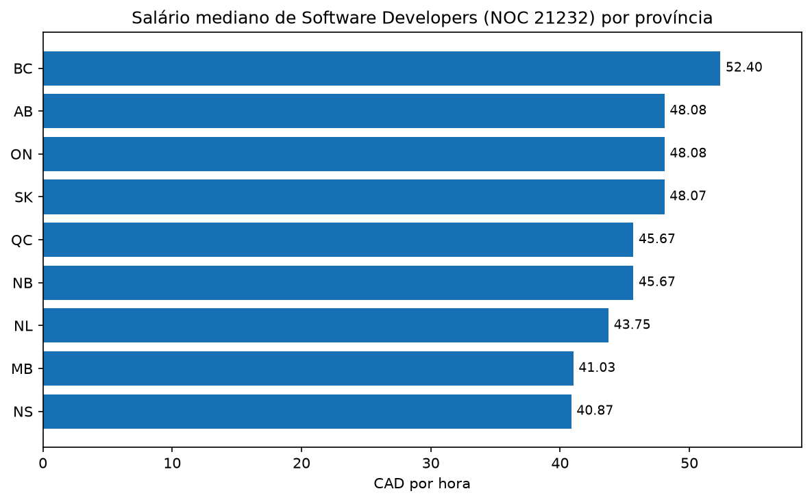
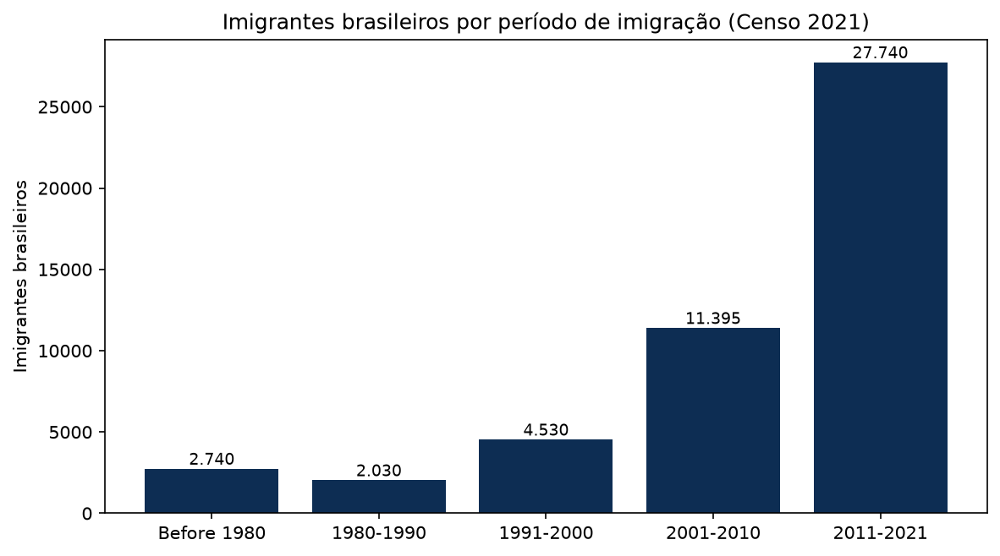
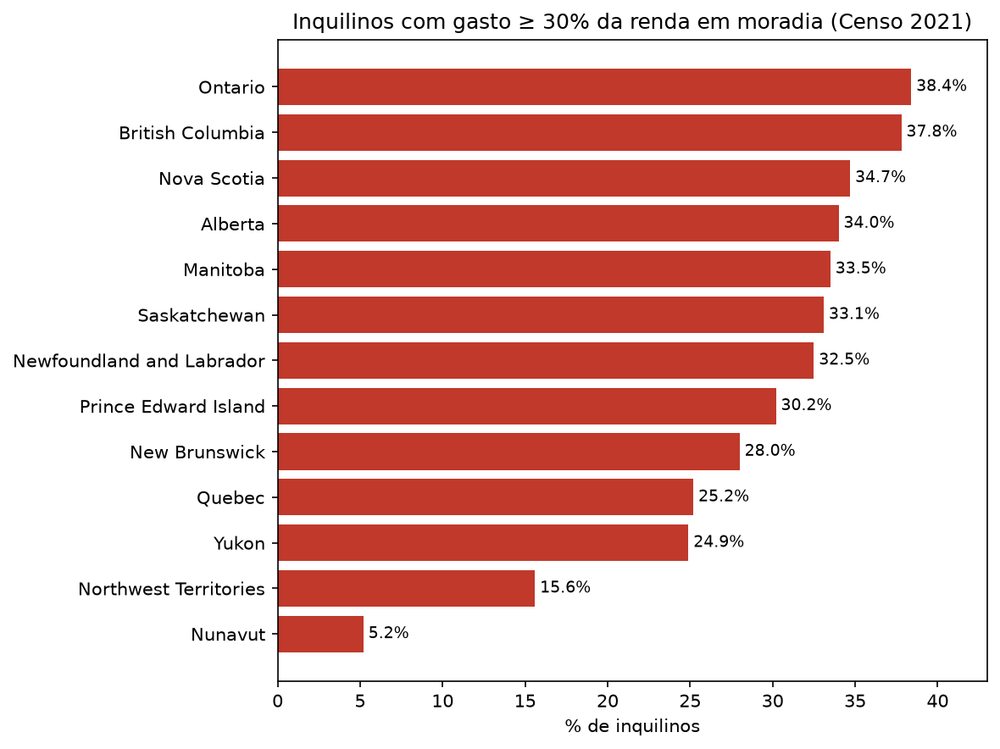

Eliezir Moreira Peixoto Neto · Raphael Phillipe da Silva Silverio
Orientador: Prof. Me. Luiz Frederico Lopes de Oliveira
Construir um Data Warehouse em Oracle que integre dados oficiais do Statistics Canada e do Job Bank/ESDC para comparar, entre as 13 províncias e territórios, a remuneração de desenvolvedores de software, a comunidade imigrante brasileira e a acessibilidade habitacional.
Salário de NOC 21232 por jurisdição — mínimo, mediano, máximo e amplitude.
Imigrantes nascidos no Brasil por província e período de chegada.
Inquilinos comprometendo ≥ 30% da renda e core housing need.
Antes: três arquivos oficiais que não conversam. Depois: uma consulta.
Até 14 de dezembro de 2026, desenvolver e documentar um Data Warehouse em Oracle integrando duas fontes institucionais por meio de três conjuntos de dados, capaz de responder às dez perguntas analíticas com cargas idempotentes e sem estimar valores ausentes.
DW em Oracle com dados oficiais de imigração, salários e habitação.
10 perguntas respondidas · 13 jurisdições · 3 conjuntos integrados.
Fontes já baixadas e modelo dimensional viável em Oracle.
Apoia a decisão real de quem vai imigrar como dev.
Prazo fechado: 14/12/2026.
Imigrantes por país de nascimento, período de chegada e província. Censo 2021.
Salários de Software Developers NOC 21232 por região. Referência 2023–2024.
Indicadores de habitação por posse (tenure): custo, ≥ 30% da renda e core housing need. Censo 2021.
As fontes não são um sistema transacional: são arquivos públicos (CSV e ZIP) publicados pelos dois órgãos. Eles são tratados como camada operacional de origem e carregados sem alteração em três tabelas de staging no Oracle — stg_job_bank_wages, stg_statcan_imigracao e stg_statcan_habitacao — antes de qualquer transformação.
📌 Períodos não coincidem: Censo 2021 para imigração e moradia, 2023–2024 para salário — por isso cada fato tem sua própria dimensão de tempo.



⚠️ São distribuições de uma base por vez. Nenhum cruzamento entre fontes aparece aqui — isso é o que o Data Warehouse vai permitir, e é o assunto das sete perguntas cruzadas.
10 dimensões · 3 fatos · surrogate keys em todas. As chaves naturais (DGUID, NOC, códigos StatCan) ficam como alternate keys — é por elas que o ETL faz o lookup e evita duplicar na recarga. fato_salario não usa dim_tempo_censo: sua referência é 2023–2024, por isso tem a própria dim_tempo_salario.
dim_disponibilidade_salario é o que permite ter 13 linhas mesmo com só 9 jurisdições publicando valor. 💼Statistics Canada · Job Bank/ESDC · Oracle · IFAL · 2026.1